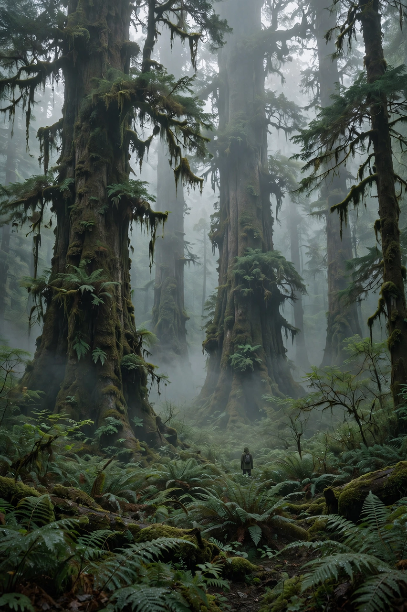

From Wikipedia, the free encyclopedia
| Deep ecology | |
|---|---|
| Type | Environmental philosophy and movement |
| Founder | Arne Næss (term coined 1973) |
| Core ideas | Intrinsic value of all life; biospherical egalitarianism; Self-realisation; 'deep' vs 'shallow' environmentalism |
| Influences | Spinoza, Gandhi, Aldo Leopold's land ethic, Rachel Carson |
| Platform | Eight-point platform drafted by Næss and George Sessions (1984) |

Deep ecology is an environmental philosophy and movement that attributes intrinsic value to all living beings and ecosystems, independent of their usefulness to humans, and holds that human flourishing itself depends on a radical rethinking of humanity's place in nature. The term was coined by the Norwegian philosopher Arne Næss in his 1973 paper "The Shallow and the Deep, Long-Range Ecology Movement", which contrasted "shallow" environmentalism — fighting pollution and resource depletion for the health and affluence of people in developed countries — with a "deep" movement that questions the underlying assumptions of industrial society.
Næss's own philosophy, which he called Ecosophy T (after his mountain hut Tvergastein), centres on Self-realisation: the widening of the self through identification with ever-wider wholes — family, community, humanity, and ultimately the whole of nature — so that care for the non-human world flows naturally rather than from duty. Related principles include biospherical egalitarianism ("the equal right to live and blossom" of all beings, in principle), diversity and symbiosis as goods, and a critique of the "man-in-environment" image in favour of a relational, total-field view influenced by Spinoza and Gandhi. In 1984 Næss and George Sessions drafted an eight-point platform intended as common ground for the diverse movement: among its points, the intrinsic value of human and non-human life, the value of richness and diversity, and the obligation to change economic, technological and ideological structures because the present human interference with the non-human world is excessive.
Deep ecology influenced radical environmental activism (including Earth First!, founded 1980), bioregionalism, and conservation philosophy, and its ideas appear in the work of poets and writers such as Gary Snyder. It also drew sharp criticism: social ecologist Murray Bookchin attacked it as misanthropic and politically evasive; ecofeminists (Ariel Salleh, Val Plumwood) argued that its expanded "Self" could erase difference and the specific critique of patriarchy; and critics charged that its population rhetoric could license cruelty toward the poor. Næss himself — a mountaineer, Gandhi scholar and Spinoza translator who was also Norway's youngest professor of philosophy — insisted the platform was a starting point for dialogue, not a doctrine.
Philosophy · Environmentalism · Philosophy of technology · Pantheism · Stoicism